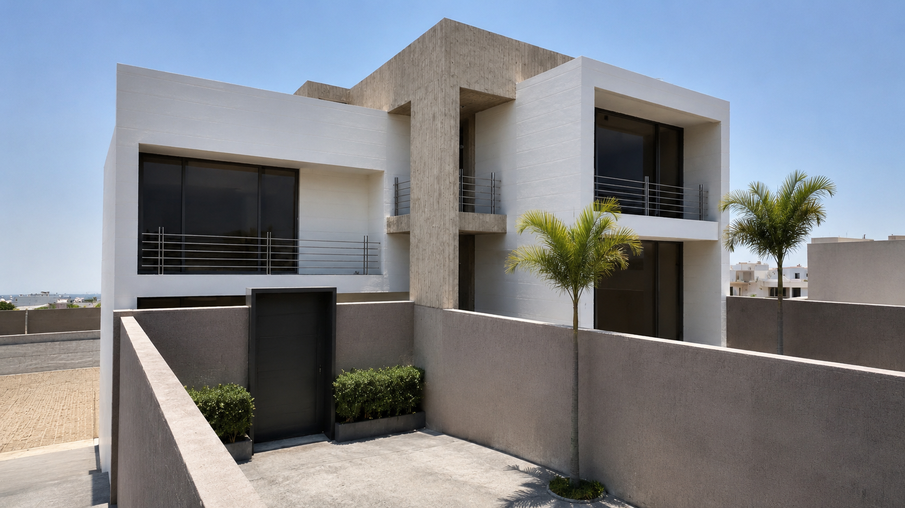
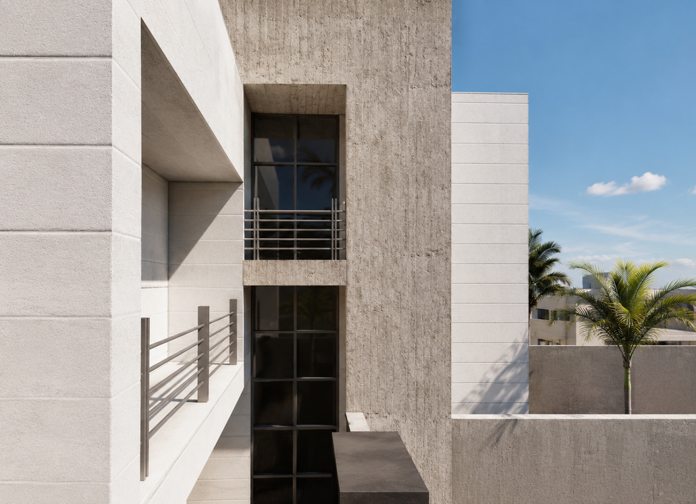
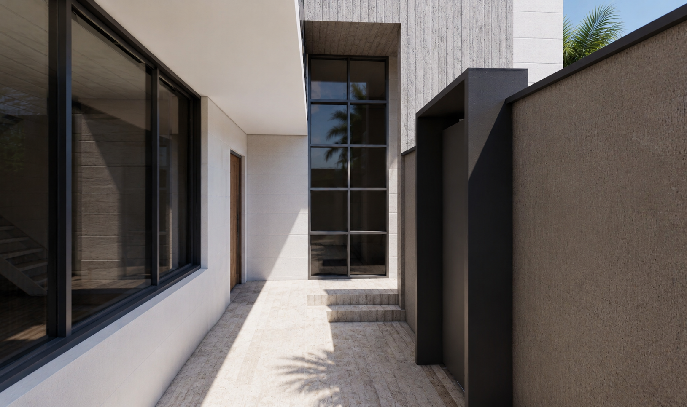
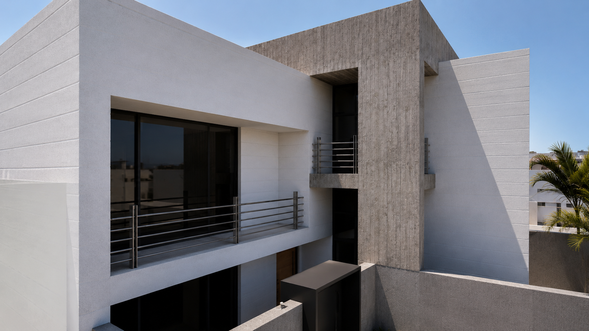
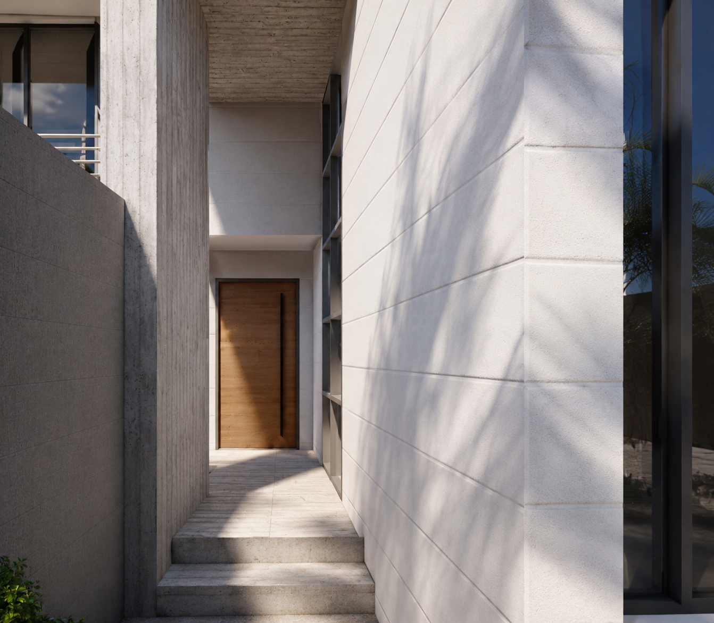

Residential Architecture

Location
Year
Scope
Located in the hot and humid climate of Bushehr, this villa is designed around the principles of passive environmental design, where the architecture responds directly to its surroundings. The project prioritizes natural ventilation, daylight, and thermal comfort to create a home that minimizes energy consumption while enhancing the quality of everyday living. The spatial organization is shaped by the movement of air. Carefully positioned openings and interconnected spaces encourage continuous cross-ventilation, allowing prevailing breezes to flow naturally throughout the villa. Deep overhangs and shaded terraces protect the interior from intense solar exposure while extending the living spaces outdoors. The villa is constructed entirely from reinforced concrete with white cement finishes. The robust concrete structure provides durability and thermal stability, while the light-colored cement reflects a significant portion of the sun's radiation, reducing heat absorption and contributing to lower cooling demands. The material palette is intentionally restrained, expressing the building's structural honesty while responding to the environmental conditions of the region. Organized over two levels, the ground floor accommodates the living, dining, and kitchen areas, creating open and flexible communal spaces. The upper floor contains the private bedrooms, where natural ventilation, filtered daylight, and carefully framed views provide a calm and comfortable living environment. Bushehr Villa demonstrates how a simple material palette and climate-responsive design strategies can work together to create a contemporary residence that is both environmentally conscious and deeply connected to its coastal context.




